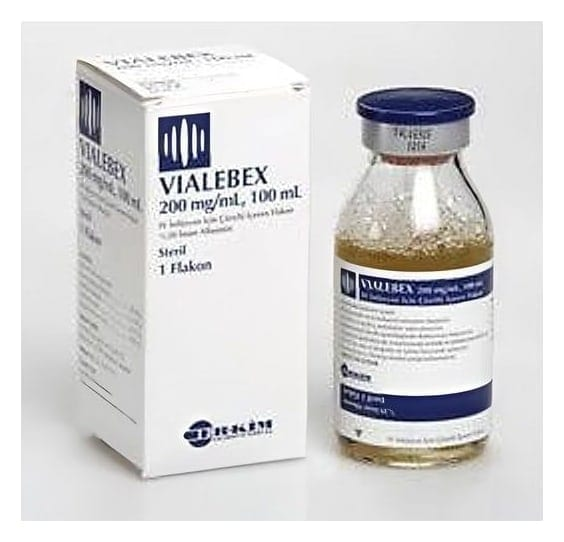

Vialebex 200 mg/ml 100 ml IV İnfuzyonluk Çözelti

Ne için kullanılır
KT · Bölüm 1• VIALEBEX, 100 mililitrelik cam flakonlarda bulunan infüzyon için çözeltidir. • Çözelti renksiz, sarı ya da yeşil renkte olup berrak ya da hafif opaktır. • Her flakon etkin madde olarak 20.00 gram insan plazma albumini içerir. • Kronik karaciğer hastalıklarında hastalığın ciddiyetini tanımlamak için kullanılan bir sınıflandırma türü olan Child sınıflandırmasına göre CHILD-C grubunda olup yaygın ve tedaviye dirençli karın içinde sıvı birikimi (asit) olan ve kanda en çok miktarda bulunan protein türü olan kan albumin düzeyi desilitrede 2 gramın altında olan kronik karaciğer hastalarında,
• Asit varlığında, bakterilere bağlı karın zarı iltihabı (bakteriyel peritonit) olan hastalarda tedaviye yardımcı olarak, • Kan albumin düzeyi ne olursa olsun, özel aletlerle kanın içindeki sıvı kısmın ayrıştırılması işlemi (plazmaferez) uygulanacak hastalarda ve plazma değişimi sırasında, • Kök hücre nakli yapılacak hastalarda ve toplardamarlarda tıkayıcı hastalığı (venookluzif hastalığı) olanlarda, • Ağır enfeksiyona bağlı şok (septik şok) tablosunda sıvı yüklemesine yanıt vermeyen ve kan albumin düzeyi desilitrede 2 gramın altında olan yoğun bakım hastalarında, • Nefrotik sendrom (idrarla protein kaybına yol açan bir tür böbrek hastalığının neden olduğu tablo) tanısı konulan ve kan albumin düzeyi desilitrede 2 gram ya da bunun altında olan ve beraberinde akciğer zarında (plevra) sıvı birikimi, karın içinde sıvı birikimi, akciğer içinde sıvı birikimi (akciğer ödemi) bulguları olan çocuk hastalarda, • Gebelik zehirlenmesinde; kan albumin düzeyi desilitrede 2 gram ya da bunun altında olan olgularda (preeklampsi ve eklampsi tablolarında),
• Nedeni bilinmeyen yumurtalık (over) aşırı uyarılması (OHSS) durumunda; kan albumin düzeyi desilitrede 2 gram ve bunun altında olan ve beraberinde akciğer zarında sıvı birikimi, karın içinde sıvı birikimi, akciğer içinde sıvı birikimi bulguları olan vakalarda,
• Hastanede yatan şeker hastalığına bağlı böbrek bozukluğu olan (diyabetik nefropatili) hastalarda, IV. derece kalp yetmezliği, tedaviye yanıtsız vücutta aşırı sıvı tutulması ve şişlik (ödem) ve dolaşımda bulunan sıvı miktarının normalin üzerinde olması (hipervolemi) durumunda kan albumin düzeyi desilitrede 2,5 gram ve bunun altında olduğunda idrar söktürücü (diüretik) tedaviye yardımcı olarak kısa süreli kullanılabilir.